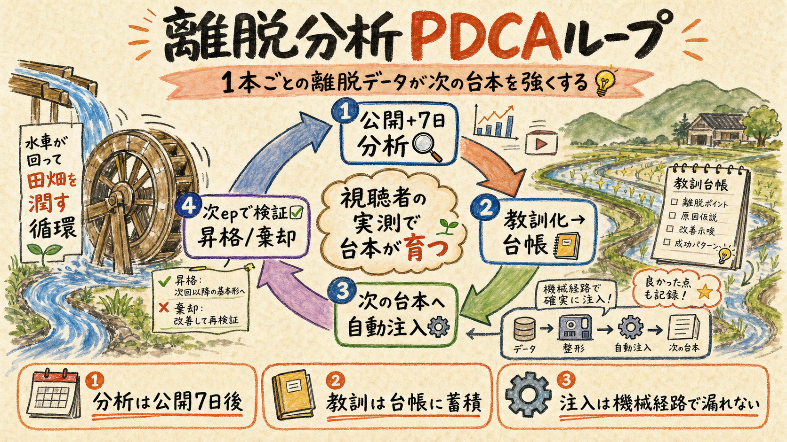
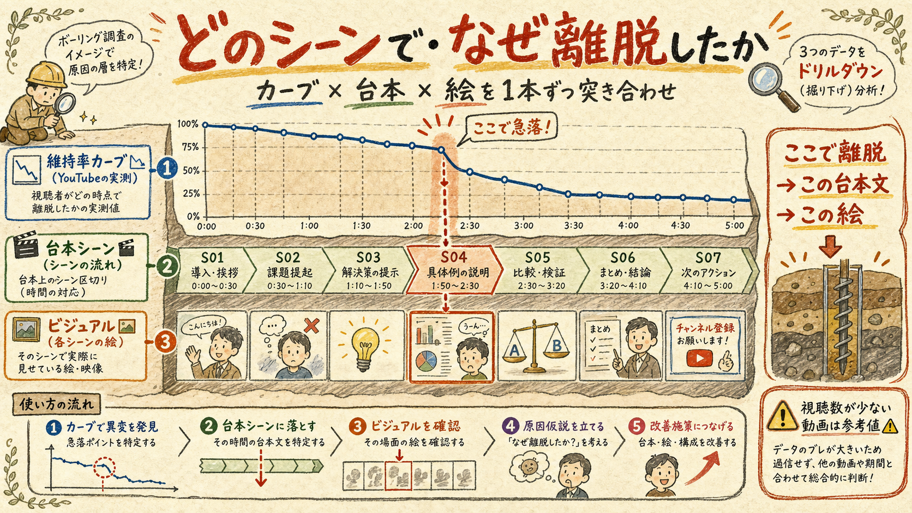
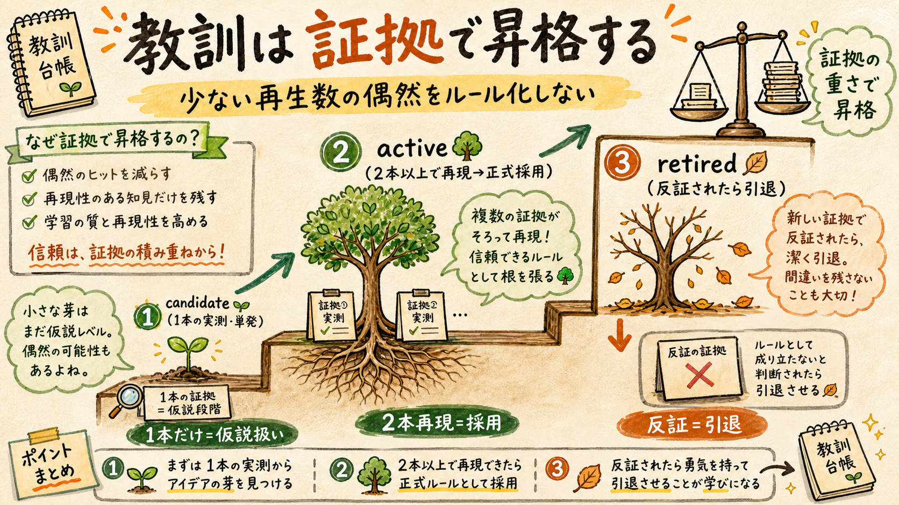

個別動画の「どこで・なぜ離脱したか」を1本ずつ精査し、その教訓を次の台本・ビジュアル制作に自動で効かせる閉ループを作る。既存の yt-retention / scene-retention / creative-loop の資産に乗せ、二重実装なしで4コンポーネントを追加する。
retention-lessons.json: rejections.json と同じ経路で採点プロンプト+台本執筆へ自動注入（還流が人力頼みにならない）ensure が蓄積を参照しつつ欠け/古いものを自動取得公開7日後の実測から始まり、次のエピソード制作で自動的に効き、その次の実測で検証される循環

なぜ今これが要るか: 既存の scene-retention は「全動画横断でどの幕タイプが落ちるか」の集計（幕配分v2.3の根拠）。しかし「この動画のこのシーンのこの表現で落ちた」という1本単位の精査と、その教訓を次の制作へ運ぶ機械経路が無い。分析レポートを読んでも人力反映では漏れる — rejections.json（本人の却下学習）と同じ思想で、視聴者の実測も台帳→自動注入にする。
| ステップ | 誰が/何が | 成果物 |
|---|---|---|
| P: 分析 ✏️改訂 | retention-drilldown.mjs — 入口は3つ: ①新作の公開+7d ②任意の全量バックフィル（古い動画の伸び悩み診断） ③制作時 ensure | シーン別損失JSON + HTMLレポート |
| D: 教訓化 | スキルがドラフト→本人確認→台帳記録 | retention-lessons.json（candidate） |
| C: 注入 | creative-loop採点 + essay-episode執筆が自動参照 | 教訓が効いた台本/ビジュアル |
| A: 検証 | retention-lessons.mjs verify <ep> | candidate→active昇格 / retired棄却 |
「維持率カーブのどの谷が、台本のどの文と、どの絵に当たるか」を1本ずつ特定する

registry で ep→dir→videoId を解決 → カーブが無い/古いなら yt-retention.mjs を内部実行して更新 → カーブ × essay-{dir}.json（シーン秒・台本文）× visual_plan.json（カットID・絵の内容）を突き合わせる。
| モード 🆕改訂 | 用途 |
|---|---|
<ep> | 1本の精査。新作の公開+7d分析も、古い動画の単体診断もこれ |
--all（バックフィル） | 公開済み全動画（古いepも）を任意のタイミングで一括取得・永続保存。取得済み・鮮度内はスキップ（増分・再開可能）。「昔の動画が伸びていない、どこで離脱しているか」を全量で見るための入口 |
ensure | 制作時用: 蓄積済みコーパスを検証し、欠けている/古いepだけ自動取得してから要約を返す。動画を作るときは常に「担保済みを参照+無ければ取る」になる |
🆕 カバレッジ台帳（担保の実体）: analytics/retention-drilldown/index.json — ep→videoId→captured_at→views_at_capture の一覧。「どのepが取得済みで、どれが欠けているか」を常に機械で答えられる。growth-tick と ensure がこれを参照して欠けを検出する。YouTube Analytics のカーブは lifetime 集計なので古い動画でも取得でき、視聴が増えた動画は再取得で上書き更新される。
| 出力 | 形式 | 用途 |
|---|---|---|
| 機械用 | analytics/retention-drilldown/ep{N}.json — シーンごとの w_start/w_end/loss_per_min（動画内正規化）、台本文、カットID、ワースト順位 | 教訓化・verify の入力 |
| 人間用 | HTMLレポート — カーブにシーン帯を重ねた図＋ワーストシーンの「台本文とその時の絵」を並置 | show-pin + share-to-phone で共有し本人が読む |
ノイズ規律（必須）: 現状の本編は views 12〜127 帯。views<30 は「参考値」バッジを付け、動画内の相対損失のみを使い、動画間の絶対比較はしない。カーブの1点の上下を根拠に断定しない（scene-retention と同じ規律を継承）。
rejections.json の実測版 — ただし少ない再生数の偶然をルール化しない安全弁つき

// analytics/retention-lessons.json の1エントリ = 1教訓 { "id": "RL-1", "lesson": "あらすじ説明が45秒続くと離脱が加速する（説明は分割して疑問を挟む）", "evidence": [{"ep": 16, "scene": "S08", "loss_per_min": 21.3, "views": 127}], "applies_to": ["essay-script", "long-hook"], "status": "candidate", // candidate(1本) → active(2本以上で再現) → retired(反証) "created": "2026-07-30" }
サブコマンド: add（記録）/ list --for <工程>（注入用の抽出）/ verify <ep>（新しい drilldown 結果と既存教訓を照合して昇格/棄却を機械判定）。
昇格規律: candidate も注入はされる（が「単発実測」と明記）。2本以上のepで再現して初めて active。以降のepで反証されたら retired になり注入から外れる。「nullを反証として引用しない」「単発を恒久ルール化しない」という既存のPDCA規律（exp-power / H51）をそのまま踏襲する。
新しい経路は作らない — rejections.json が通っている既存の注入口に台帳を追加する
| 注入先 | 変更 | 効果 |
|---|---|---|
creative-loop.mjs | rejections と同格で retention-lessons（status≠retired・applies_to一致）を採点プロンプトへ注入 | 却下（本人の美意識）と離脱（視聴者の実測）の両輪が採点に効く |
essay-episode SKILL.md ✏️改訂 | Step 0（PDCA）で retention-drilldown.mjs ensure を実行（蓄積コーパスを参照しつつ、取っていないepがあればここで取る）。Step 2（台本）・Step 4（ビジュアル計画）に「retention-lessons.mjs list --for <工程> を読む」を追記 | 執筆時点で実測と教訓が両方手元にある |
growth-tick.mjs | 「公開+7日・drilldown未実施」のepをフラグ | 分析漏れが日次司令に載る |
スキル .claude/skills/retention-pdca/SKILL.md がループの司令塔。「離脱分析」「ep N のretention」等で発動し、次のワークフローを回す:
| # | 工程 | ゲート |
|---|---|---|
| 1 | 対象決定（ep指定 / 公開+7日・未分析の走査 / 🆕 本人の任意指示で全量バックフィル） | — |
| 2 | drilldown 実行 → HTMLレポートを show-pin + share-to-phone で共有 | — |
| 3 | ワーストシーンから教訓ドラフト → 台帳へ記録 | 本人確認（教訓は編集判断） |
| 4 | verify: 既存 candidate を新実測と照合 → 昇格/棄却 | 機械判定 |
検討した3案と、YAGNIで落としたもの
| 案 | 内容 | 判定 |
|---|---|---|
| A. 最小案 | scene-retention に --ep を足すだけ・教訓は手動反映 | 還流が人力頼みで漏れる → 不採用 |
| B. 本設計 | 分析→台帳→注入→検証が機械経路で閉じ、教訓の質だけ人間ゲート | 推奨・採用 |
| C. 全自動案 | 教訓記録まで無人・cron駆動 | 少数viewsのノイズを無審査でルール化するリスク → 不採用 |
テスト方針: drilldown は実データ（ep16=127views等）でシーン境界とカーブ補間の整合を検証。lessons は add→verify の昇格/棄却ロジックをユニットテスト。注入は creative-loop のプロンプト組立に lessons が入ることを既存 test-creative-harness-*.mjs 方式で確認。
作らないもの（YAGNI）: リアルタイム監視ダッシュボード（取得は「任意バックフィル+公開7d+制作時ensure」の3経路で十分）／ショート用の別実装（まず本編で確立。ショートは shorts-qa/H51 系が既にある）。✏️ 訂正（2026-07-30 本人指示）: 旧案の「過去全epの一括分析はしない」は撤回し、--all バックフィルとして正式に作る。ただし教訓化（台帳への記録）は一括自動でなく、レポートを見て本人確認を通したものだけ記録する。
drilldown / lessons台帳 / 注入1箇所 / スキル の4点のみ